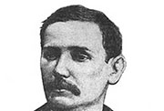
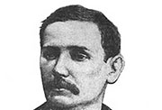
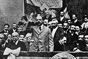
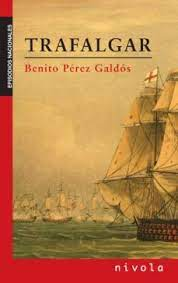
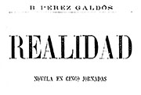
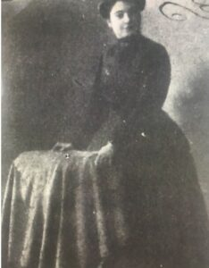
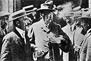
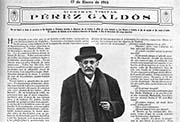
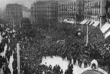

1843
El 10 de mayo nace Benito Pérez Galdós en Las Palmas de Gran Canaria, hijo del militar D. Sebastián Pérez y de Dolores Galdós (hija de un antiguo secretario de la Inquisición).
El 10 de mayo nace Benito Pérez Galdós en Las Palmas de Gran Canaria, hijo del militar D. Sebastián Pérez y de Dolores Galdós (hija de un antiguo secretario de la Inquisición).
Galdós ingresa en el Colegio San Agustín que desarrollaba métodos activos y una seria atención a las letras, especialmente al latín.
Bachiller en artes en el Instituto de La Laguna. Hasta entonces ya había colaborado en la prensa local con algunas poesías satíricas, relatos fantásticos y breves ensayos. También se había presentado como dibujante y pintor. En septiembre inicia su viaje a Madrid para iniciar estudios de Derecho. Sin embargo dedica el curso a escuchar a Fernando de Castro, Francisco de Paula Canalejas, Adolfo Camus y a Valeriano Fernández.
Inicia la tertulia canaria con Carballo, Luis Francisco Benítez de Lugo, Plácido Sansón Grandy (creador de la Revista del Movimiento Intelectual de Europa) y Fernando León y Castillo.
Galdós mantiene sus estudios de Derecho de manera irregular pero, en cambio, frecuenta el Ateneo y es un gran lector de los clásicos europeos.
Benito Pérez Galdós continúa sus múltiples lecturas sobre todo de escritores franceses e ingleses. Testigo del pronunciamiento de los sargentos de San Gil.
En el verano de este año viaja a París para visitar la Exposición Universal. Regresa al año siguiente y en estos dos viajes completa su conocimiento de La comedia humana. Descubre a Dickens y traduce su Pickwick. Se inicia como escritor de novelas con La Fontana de Oro que publicará más tarde.
Por inasistencia de Galdós a clase le borran de las listas de la Facultad de Derecho. Desde Alicante regresa a Madrid para contemplar la entrada en Madrid del general Serrano y, más tarde, la de su admirado Prim.
Como periodista tuvo ocasión de asistir a los debates sobre la Constitución aprobada en este año. En las crónicas escritas en Las Cortes muestra su posición sobre Pi y Margall, el modelo republicano y, en general, respecto de las ideas aún vigentes tras la «Gloriosa».
Albareda le ofrece a Benito Pérez Galdós colaborar en la Revista de España. A finales de este año está en las librerías La Fontana de Oro. Director de El Debate, diario gubernamental.
Comienza su relación con Santander y conoce a Pereda de quien ya había leído sus Escenas montañesas.
Se cierra El Debate y evoluciona hacia la novela histórica. Publica Trafalgar. Escribe en La Guirnalda.
Perojo, Ensayos sobre el Movimiento Intelectual en Alemania. Funda la Revista Contemporánea.
Galdós mantiene una muy interesante disputa epistolar con Pereda a propósito de Gloria.
Suceso de la Mano Negra; se crea la Comisión de Reformas Sociales; Cossío, Director del Museo Pedagógico Nacional. Leopoldo Alas, «Clarín», La Regenta. El amigo Manso es el segundo juicio literario al krausismo que Leopoldo Alas supo ver inmediatamente.
comienza su prolongada e interesante colaboración con La Prensa de Buenos Aires. Cada vez más admirado por Clarín.
Son para Galdós, antes que nada, los años de su gran Fortunata y Jacinta. Realiza con Alcalá Galiano un largo viaje por Europa.
Será propuesto como académico. Con Realidad inicia la novela dialogada.
Con Ángel Guerra y Toledo como espacio simbólico inicia una profunda revisión de la espiritualidad española que concluirá casi veinte años más tarde con El caballero encantado.
Nace su hija María.
Lee su discurso de ingreso en la Academia, La sociedad presente como materia novelable. Le contesta Menéndez Pelayo con un texto de gran interés. Ese mismo año Galdós responde al de Pereda, también nuevo académico. Publica Misericordia, la novela que tan pronto apreciará María Zambrano. Años de pleitos por la propiedad de sus obras en los que es mediador Gumersindo de Azcárate; Galdós recupera su autoría pero con un alto coste económico.
A finales de enero estrena Electra cuyo éxito fue enorme y se convirtió en el símbolo de la lucha por la libertad de conciencia frente al clericalismo carlista e integrista. Son frecuentes sus contactos con los escritores de la siguiente generación: con Baroja, Valle Inclán y Unamuno. De este año es su última «carta» a La Prensa.
Publica Soñemos, alma, soñemos en la revista Alma española, difusora de las ideas de la generación del cambio de siglo de sabor regeneracionista.
A finales de enero estrena Electra cuyo éxito fue enorme y se convirtió en el símbolo de la lucha por la libertad de conciencia frente al clericalismo carlista e integrista. Son frecuentes sus contactos con los escritores de la siguiente generación: con Baroja, Valle Inclán y Unamuno. De este año es su última «carta» a La Prensa.
Muestra su adhesión al Partido Republicano mediante la carta abierta que envió a Alfredo Vicenti, director de El Liberal. Fue publicada el 6 de abril, quince días antes de las elecciones en las que saldría elegido diputado. Colabora en La República de las Letras, la revista que editará Blasco Ibáñez sobre una idea que había tenido Clarín, muerto prematuramente en 1901.
Desempeña una importante actividad política durante estos años y es una persona importante en la realización de la candidatura republicano-socialista.
Galdós, el diputado más votado por Madrid en cuya candidatura fue también elegido Pablo Iglesias.
Dicta su último Episodio, Cánovas. Comienzan sus graves apuros económicos. La España «progresista» desea proponerle para el Premio Nobel que no llegó a alcanzar.
Se aparta de la Conjunción Republicano Socialista a pesar de que poco antes había defendido la necesidad de resistir. Quizá se debió a la expulsión de Melquíades Álvarez quien había fundado el Partido Reformista al que se había adherido Galdós. Este año se formaliza la petición del Nobel para Galdós, firmada por Octavio Picón, Echegaray, Sellés y Carracido y redactada por Ramón Pérez de Ayala. Forma parte de la directiva del Teatro Español y eso le proporciona algún enfrentamiento con Valle Inclán.
Elegido Diputado republicano por Las Palmas.
Publica su última novela La razón de la sinrazón. Colabora en La Esfera donde, entre cosas, escribe sobre la guerra europea y se muestra aliadófilo.
Se realizan nuevos esfuerzos para que se le conceda el Nobel, igualmente fracasados.
Estrena Santa Juana de Castilla, su última obra de teatro, que había concebido casi treinta años antes (poco después de escribir Ángel Guerra y con motivo del cuarto centenario 1492-1892). Puede ser considerada como su testamento intelectual.
Muere en la madrugada del tres de enero. Toda la prensa se hace eco de la noticia. Muchos de los autores de las generaciones siguientes escriben artículos, entre ellos Unamuno y Ortega. Más respetuoso este que aquel a pesar de lo escrito muchos años antes. También algunos silencios. Beltrán de Heredia nos ha dejado dicho que «la gente se arracimaba en los balcones y llenaba las aceras. El comercio había cerrado espontáneamente sus puertas. Los guardias de seguridad apenas lograban contener a la multitud...»
